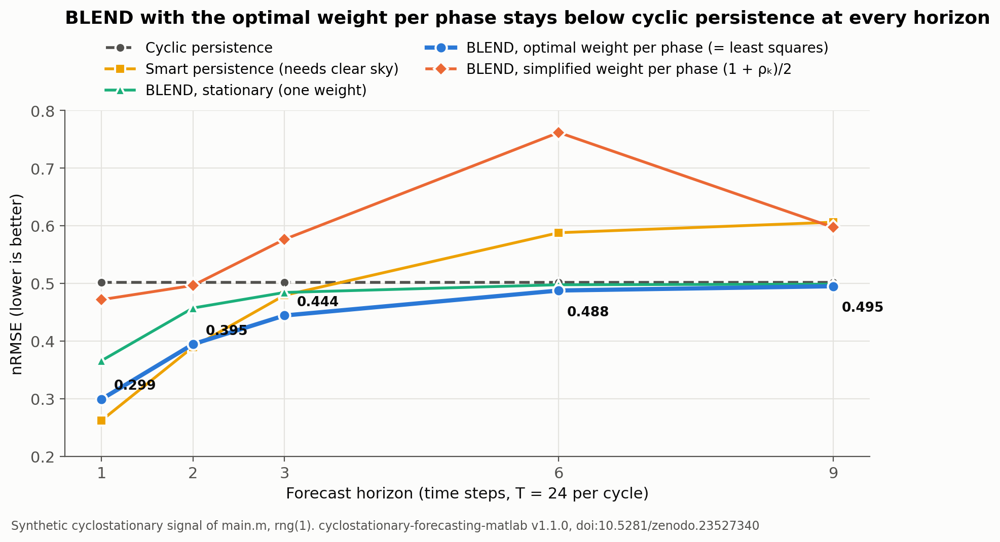
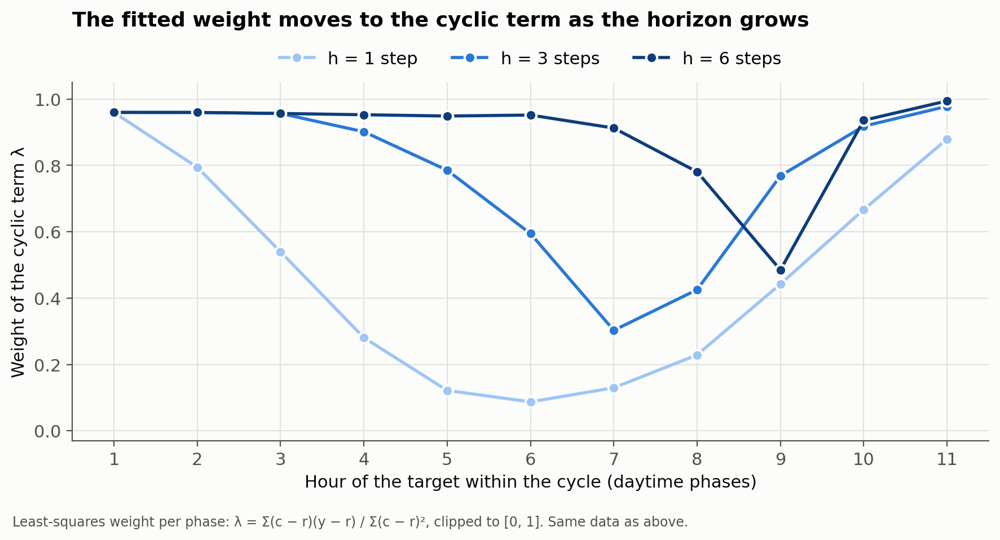

Why compare a solar forecast with persistence? BLEND and cyclostationary persistence
What does BLEND add?
The study develops analytical reference forecasts that exploit periodic statistics. The full cyclostationary operator weights the two persistences with one MSE-optimal weight per phase; fitting that weight by least squares on past cycles gives the same forecast. The simplified coefficient λ = (1 + ρ)/2, also computed for each phase from the local correlation ρ, only helps at the shortest horizons.

Cyril Voyant · Published 2026-10-19
BLEND, the cyclostationary persistence operator of Cyril Voyant and co-authors (Applied Mathematical Modelling, 2026, doi:10.1016/j.apm.2026.116988), mixes ordinary persistence with same-phase persistence from the previous cycle, giving a training-free reference forecast for periodically correlated energy series.
BLEND, l’opérateur de persistance cyclostationnaire de Cyril Voyant et coll. (Applied Mathematical Modelling, 2026, doi:10.1016/j.apm.2026.116988), combine la persistance ordinaire et la persistance de même phase du cycle précédent : c’est une prévision de référence sans apprentissage pour les séries énergétiques à corrélation périodique.
Questions about persistence in solar forecasting
Why compare a solar forecast with persistence?
Persistence costs nothing and is hard to beat at short horizons. A forecast that does not beat a well-defined persistence reference, on the same samples and horizons, adds no demonstrated skill. Report the gain against that reference, for example with the NICEᵏ metrics, and state which persistence you used: simple, clear-sky (“smart”) or cyclostationary.
What is cyclostationary persistence?
Solar irradiance, wind and load do not keep the same statistics through the day: mean, variance and correlation repeat with the cycle. Cyclostationary persistence uses that structure. BLEND weights the latest observation and the same-phase observation of the previous cycle with an optimal weight for each phase, λ = Σ(c − r)(y − r) / Σ(c − r)² on past cycles (r latest value, c previous-cycle value, y target). No network is trained: the weight is a closed-form one-dimensional least-squares fit.
Pourquoi comparer une prévision solaire à la persistance ?
La persistance ne coûte rien et reste difficile à battre aux courts horizons. Une prévision qui ne fait pas mieux qu’une persistance bien définie, sur les mêmes dates et horizons, n’apporte pas de gain démontré. Il faut exprimer le gain par rapport à cette référence, par exemple avec les métriques NICEᵏ, et préciser quelle persistance est utilisée : simple, normalisée par le ciel clair ou cyclostationnaire.
Qu’est-ce que la persistance cyclostationnaire ?
L’éclairement solaire, le vent ou la charge électrique n’ont pas les mêmes statistiques à toute heure : moyenne, variance et corrélation se répètent avec le cycle. BLEND pondère la dernière observation et l’observation de même phase du cycle précédent avec un poids optimal pour chaque phase, λ = Σ(c − r)(y − r) / Σ(c − r)² sur les cycles passés. Aucun réseau n’est entraîné : le poids est un ajustement par moindres carrés à une dimension, en forme fermée.
Key finding
Accounting for the daily phase improves persistence forecasts on the solar series studied, and the differences widen at longer lead times. In the Applied Mathematical Modelling paper, validation combines controlled cyclostationary simulations with measurements from 68 Spanish stations; on measured data, cyclostationary adjustments reduce errors relative to their naive counterparts, and inter-model differences are tested with Wilcoxon tests. BLEND works directly on raw irradiance, without normalizing by an external clear-sky model.
Results of the open code (v1.1.0)
Three BLEND operators share the same forecast, Î(t+h) = λ I(t+h−T) + (1 − λ) I(t), and differ only in the weight λ: one weight for the whole series (stationary BLEND), or one weight per phase, either simplified, (1 + ρ)/2 from the local correlation, or MSE-optimal. With the optimal weight per phase, BLEND stays below cyclic persistence at every horizon and below smart persistence from three steps ahead, without a clear-sky model. The simplified per-phase weight (1 + ρ)/2 assumes the same mean at t and t + h; on a daily cycle it only helps one or two steps ahead.

| Operator | h = 1 | h = 2 | h = 3 | h = 6 | h = 9 |
|---|---|---|---|---|---|
| BLEND, stationary (one weight) | 0.366 | 0.457 | 0.484 | 0.498 | 0.499 |
| BLEND, optimal weight per phase (= least squares) | 0.299 | 0.395 | 0.444 | 0.488 | 0.495 |
| BLEND, simplified weight per phase (1 + ρ)/2 | 0.472 | 0.496 | 0.576 | 0.762 | 0.597 |
| Cyclic persistence | 0.502 | 0.502 | 0.502 | 0.502 | 0.502 |
| Smart persistence (needs a clear-sky model) | 0.262 | 0.390 | 0.479 | 0.588 | 0.606 |

Fitted on the first half of the series and scored on the second, the least-squares weight gives 0.303 / 0.399 / 0.451 / 0.496 / 0.503: no overfitting. Version 1.1.0 (doi:10.5281/zenodo.23527340) fixes an indexing error of v1.0.0 that compared some forecasts with already known values. Data: nRMSE of all twelve operators (CSV) · full table on GitHub · step-by-step example.
A ladder of reference forecasts
Use references in increasing order of sophistication, and report each one. The first five are documented in Benchmarks for solar radiation time series forecasting (Cyril Voyant, Gilles Notton, Jean-Laurent Duchaud, Luis Antonio Garcia-Gutierrez, Jamie M. Bright, Dazhi Yang, Renewable Energy 191, 747–762, 2022, doi:10.1016/j.renene.2022.04.065) and implemented in ARTU; BLEND comes from the 2026 paper.
| Reference | Idea | Estimated from data |
|---|---|---|
| Persistence (PER) | carry the last clear-sky index forward | nothing |
| Climatology (CLIM) | mean clear-sky index of the training sample | one mean |
| CLIPER | persistence and climatology weighted by the lag-h autocorrelation | one correlation |
| Exponential smoothing (ES) | exponentially weighted recent values | one correlation |
| ARTU | second-order extension using lag-h and lag-2h autocorrelations, coefficients read from a lookup table | two correlations |
| BLEND (cyclostationary) | persistence and same-phase persistence, one optimal weight per phase (a simplified per-phase weight (1 + ρ)/2 also exists) | cyclic statistics or a closed-form least-squares fit |
Limits
“Training-free” does not mean “observation-free”: cyclic means, deviations and correlations must still be estimated on past data, and they need enough cycles to be stable. BLEND does not outperform every optimized method; autoregressive or learned predictors can do better under some conditions. The evidence concerns the datasets of the paper, not a universal ranking of forecasting methods. Test the transfer to your own series rather than assuming it.
Authors, code and citation
BLEND is the work of six co-authors, listed here in the order of the article; names link to their ORCID record when the publisher metadata provides it.
MATLAB implementation of BLEND, CLIPER and their stationary and cyclostationary variants, with Holt-Winters, Theta and periodic AR benchmarks: cyclostationary-forecasting-matlab · software doi:10.5281/zenodo.18812333 · MIT licence · archived in Software Heritage. Preprint: arXiv:2602.18949.
Cite: Cyril Voyant, Candice Banes, Luis Garcia-Gutierrez, Gilles Notton, Milan Despotovic, Zaher Mundher Yaseen, “Symmetry-constrained forecasting of periodically correlated energy processes”, Applied Mathematical Modelling 157, 116988 (2026), doi:10.1016/j.apm.2026.116988.
Related: NICEᵏ metrics · PV_ELM_pred benchmark (persistence, BLEND, AR, ELM) · deseasonalization benchmark.